인터랙션 동작 기준
모달과 토스트의 위치, 드롭다운 동작, 페이지 이동과 스크롤 영역, 모달의 진입·종료 상태를 하나의 기준으로 정리했어요.
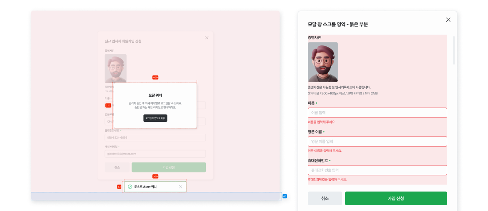
HR · Groupware
조직과 권한을 기준으로 정리한 HR 플랫폼
Product Designer

01Context
흩어져 있던 사내 업무를 한 흐름으로 묶는 프로젝트예요. 같은 업무라도 부서·직책·역할에 따라 필요한 메뉴와 데이터가 달라서, 누가 무엇을 보는지가 설계의 출발점이었어요.
02Core Problem
인사, 근태, 전자결재, 권한 관리처럼 흩어진 사내 업무를 한 흐름으로 묶어야 했어요. 같은 업무라도 부서·직책·역할에 따라 필요한 메뉴와 데이터가 달라요.
부서·직책·역할에 따라 접근할 메뉴와 데이터가 달라져요.
전자결재는 작성뿐 아니라 승인·반려·이력까지 이어서 읽혀야 해요.
그래서, 이렇게 봤어요
메뉴를 늘리기보다 조직·권한의 관계와 결재의 처리 순서를 먼저 정리해야 한다고 봤어요.
03Design Direction
기능과 메뉴를 늘리기보다
조직과 역할의 관계부터 정의했어요
문서 자체를 보여주기보다
현재 상태와 다음 처리 순서가 먼저 읽히게 했어요
화면마다 따로 정하기보다
모달·토스트·스크롤의 동작 규칙을 먼저 맞췄어요
04Before & After
권한 구조와 결재 화면, 두 가지를 바꿨어요.
Before
After
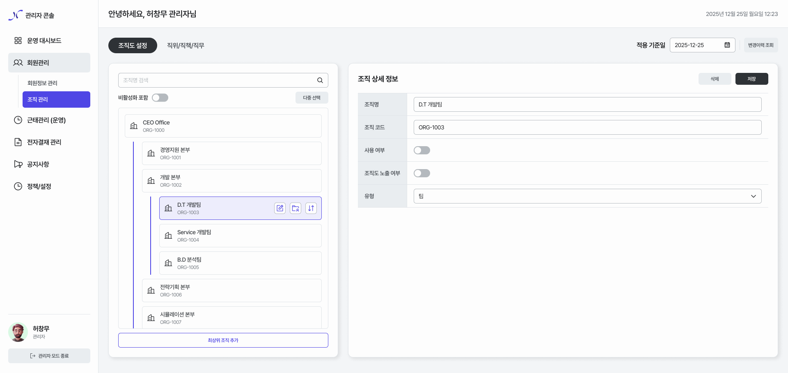
01
사용자마다 쓰는 기능과 접근할 수 있는 정보가 달라서, 화면을 나누기 전에 조직과 역할의 관계부터 정의했어요.
Before
After
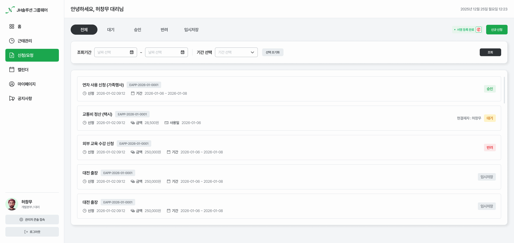
02
기안 작성 이후에도 승인·반려·이력 확인이 이어져서, 문서 자체보다 지금 어떤 처리를 해야 하는지가 먼저 읽혀야 했어요.
05Key Decisions
누가 무엇을 볼 수 있는지와 반복되는 동작의 규칙을 먼저 정해, 디자인과 개발의 해석 차이를 줄였어요.
인사·근태·신청·요청과 결재 흐름을 처리해요.
조직·회원·권한과 근태 운영을 관리해요.
기안 → 승인 또는 반려 → 이력 확인 순서로 읽어요.
모달과 토스트의 위치, 드롭다운 동작, 페이지 이동과 스크롤 영역, 모달의 진입·종료 상태를 하나의 기준으로 정리했어요.

컬러·타이포그래피 기준과 재사용 컴포넌트로 반복되는 화면 구조를 맞췄어요.
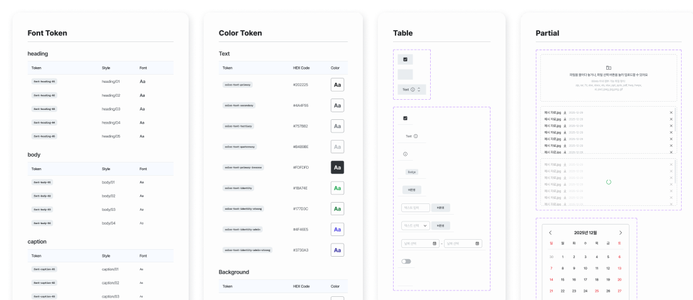
06Key Screens
주요 화면을 사용 흐름에 따라 살펴보세요.
개인의 업무 현황에서 시작해요.
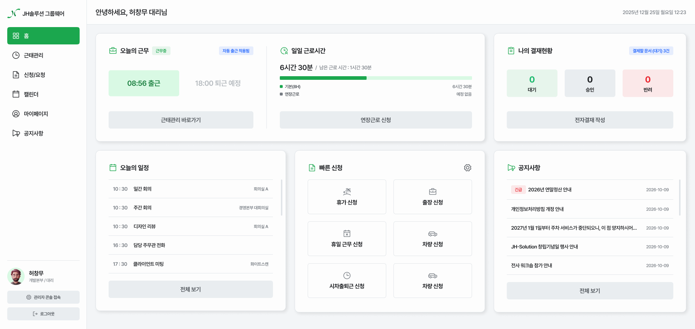
사용자와 관리자의 역할을 나눠, 개인이 반복해서 처리하는 업무를 먼저 찾게 했어요.
날짜별 근태와 요약을 함께 살펴봐요.
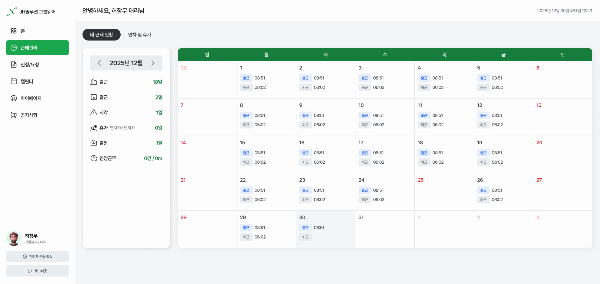
달력과 근태 요약을 나란히 두어, 개별 날짜와 전체 상태를 오가며 확인하게 했어요.
운영자 관점으로 업무 범위를 넓혀요.
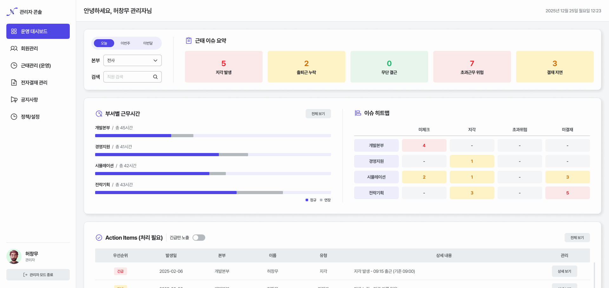
개인의 처리 화면과 조직 운영 화면을 분리해, 역할에 맞는 정보와 접근 범위를 드러냈어요.
관리자 권한으로 근태 데이터를 살펴봐요.
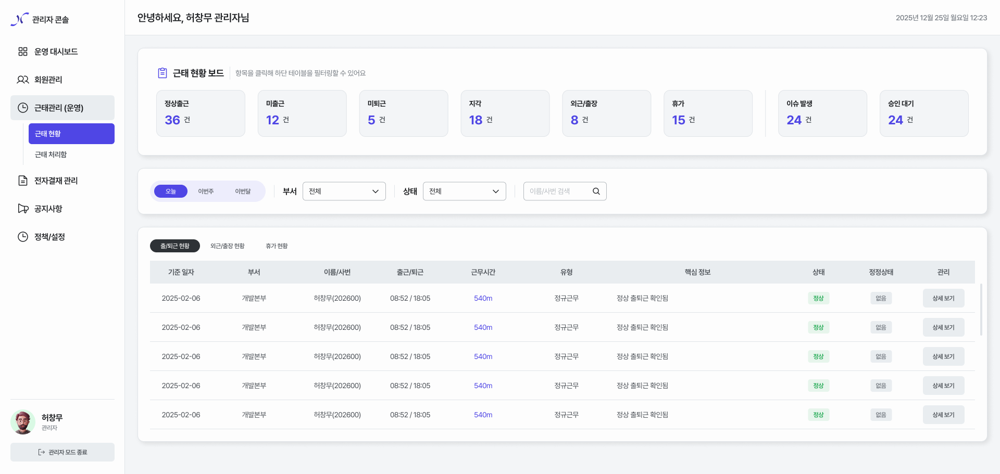
개별 사용자의 확인 흐름과 구분해, 관리자가 조직의 근태를 한곳에서 다루게 했어요.
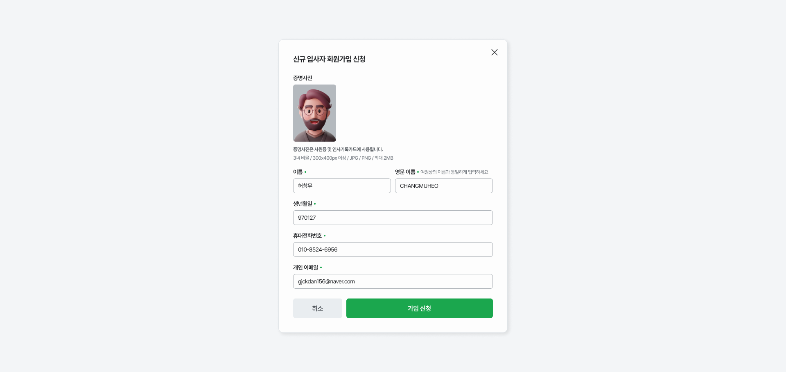
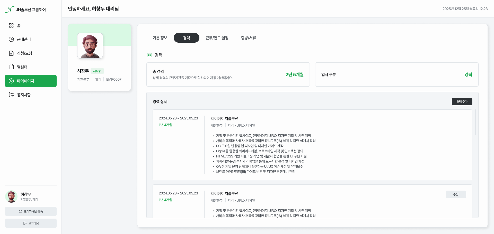
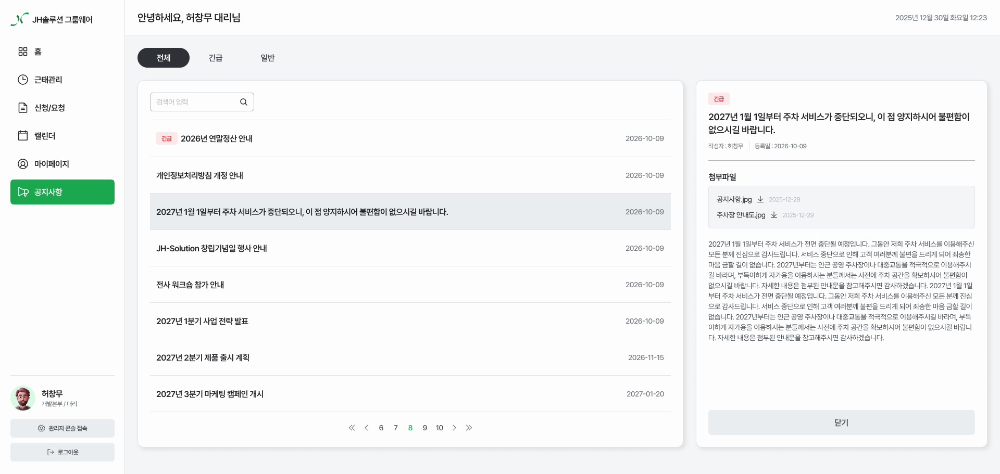
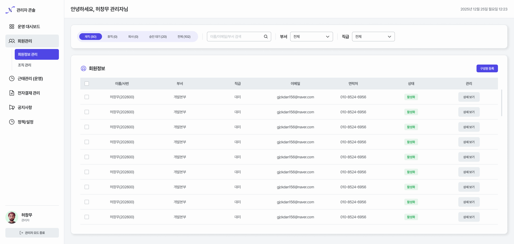
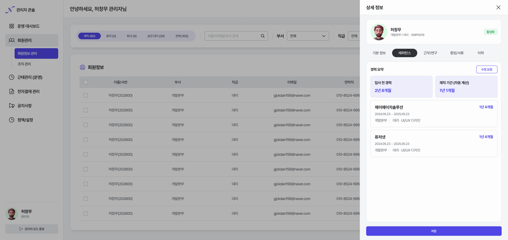
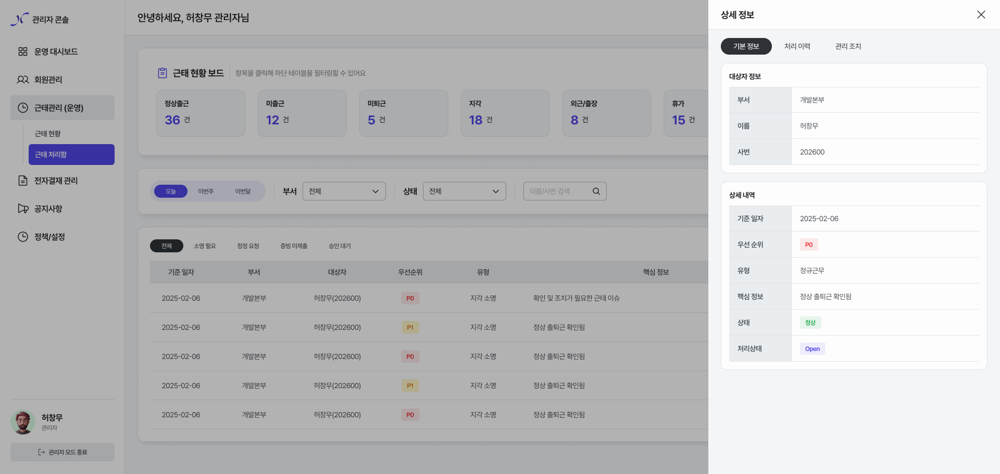
07AI Workflow예시
이 프로젝트의 AI 활용 기록을 채울 자리예요. ‘예시’로 표시한 칸을 실제로 AI에 맡긴 일로 바꿔 주세요.
01권한 정리
AI가 도운 일예시부서·직책·역할별 메뉴와 권한 차이를 표로 정리한 초안을 만들었어요.
직접 판단한 일조직과 역할의 관계를 메뉴와 데이터의 접근 기준으로 정했어요.
02화면 비교
AI가 도운 일예시비슷한 업무 화면의 정책·권한·상태 차이를 먼저 비교했어요.
직접 판단한 일결재의 현재 상태와 다음 처리 항목을 함께 보여주기로 정했어요.
03검수
AI가 도운 일예시모달·토스트·스크롤 동작의 확인 항목 초안을 정리했어요.
직접 판단한 일예시개발 결과가 동작 기준과 맞는지 직접 확인했어요.
08Outcome
흩어진 사내 업무를 역할과 상태 기준으로 다시 묶은 결과예요.
조직·직책·역할에 따라 메뉴와 데이터 접근 범위가 나뉘어요.
기안 → 승인·반려 → 이력으로 현재 상태와 다음 처리 항목을 확인해요.
모달·토스트·스크롤 동작을 디자인과 개발이 같은 기준으로 구현했어요.
기능을 모으는 것보다 역할과 처리 상태를 먼저 정리해야 업무 흐름이 읽혀요. 권한이 복잡한 제품에서는 화면보다 접근 구조를 먼저 정하는 순서를 기준으로 삼아요.
Next Project
냉장고가 우리 집에 들어가는지, 사기 전에 확인하는 3D 서비스